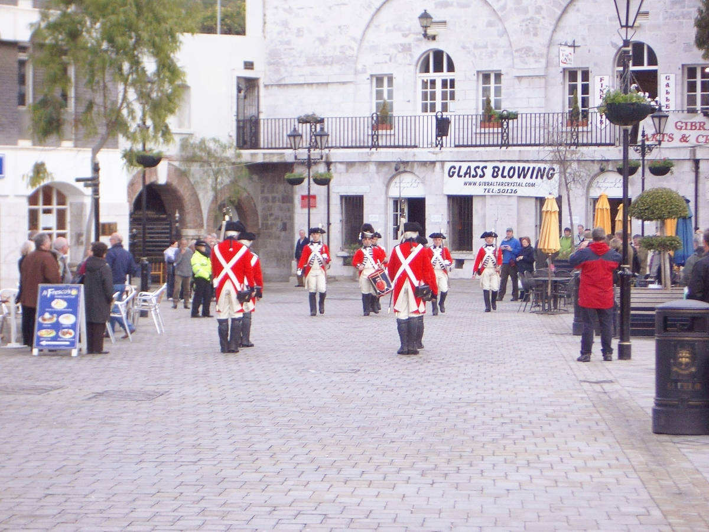
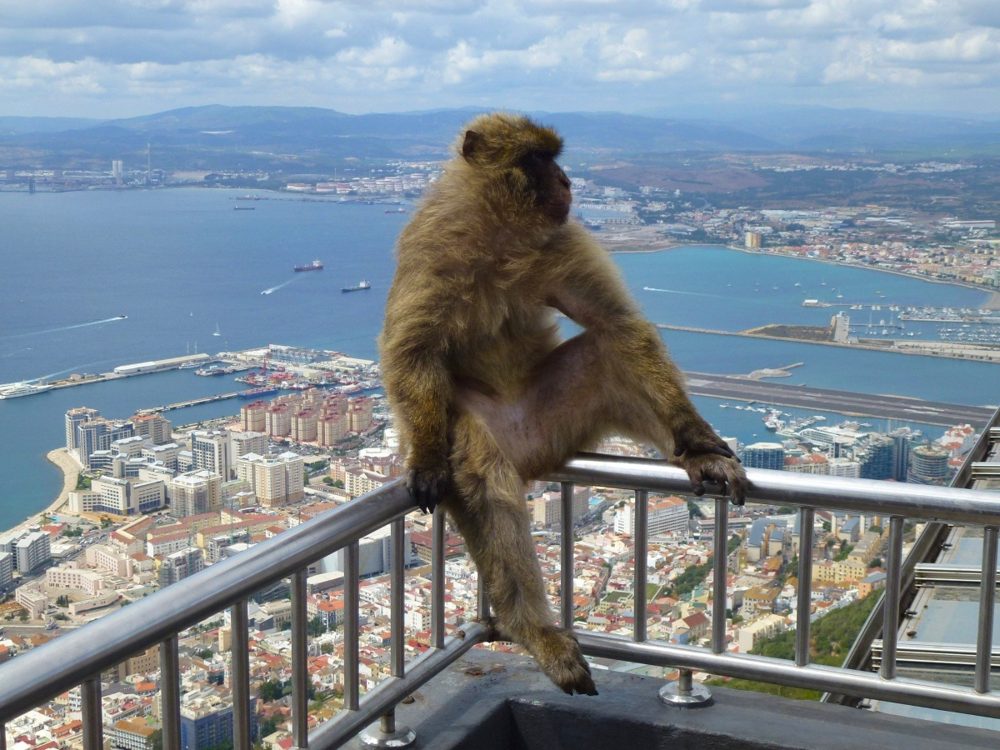
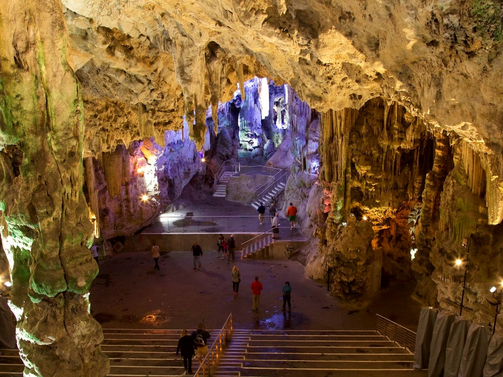
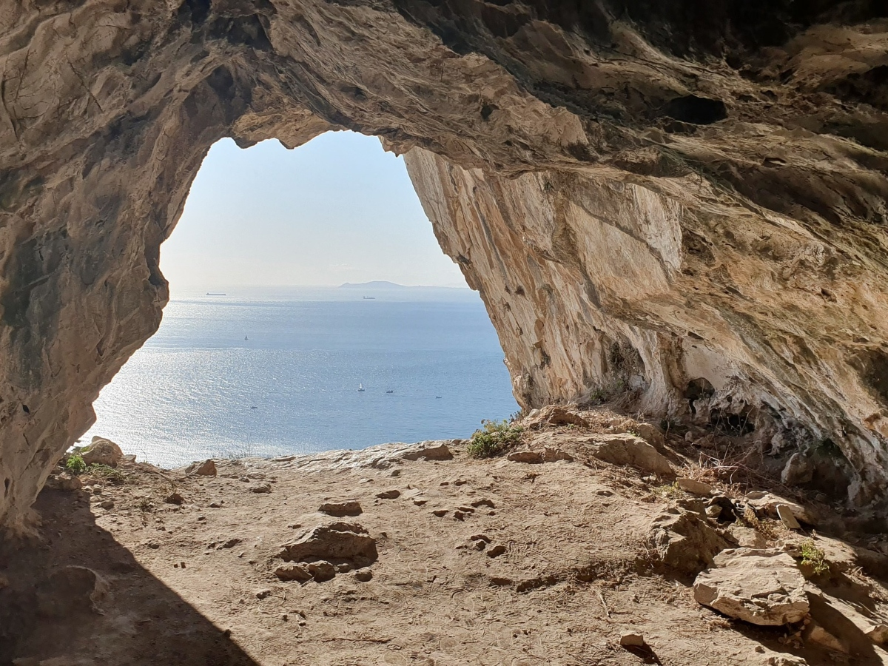
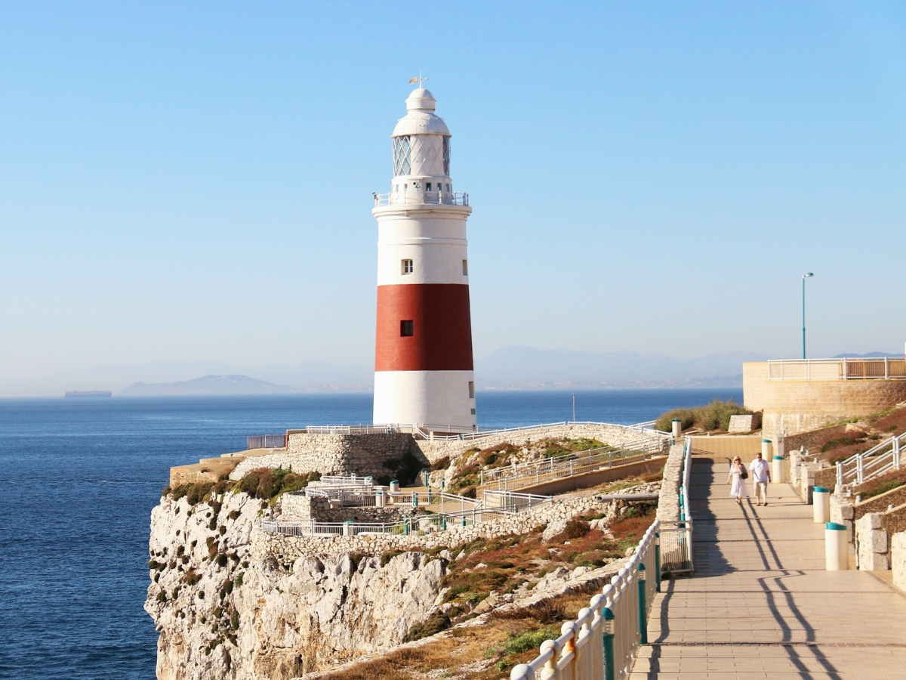
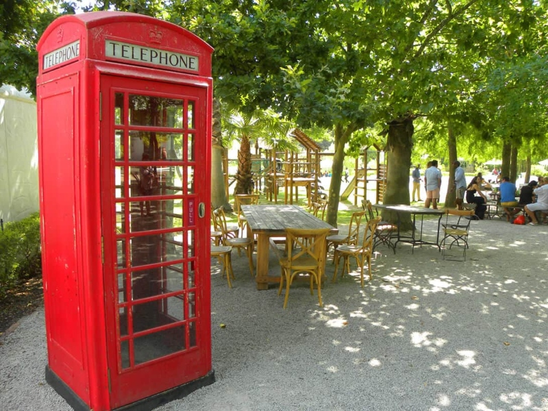
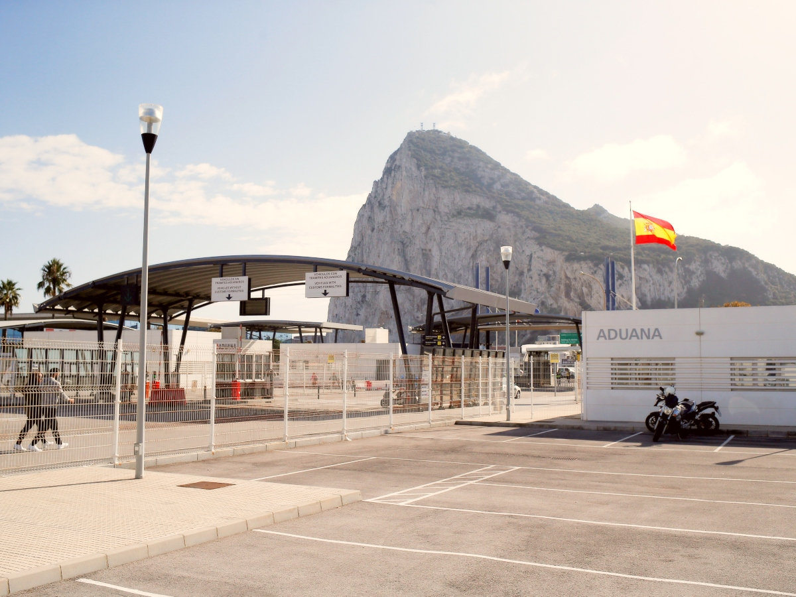

You drive through Andalucía for three hours, cross a border, and find yourself in a town with red post boxes and English pub signs.
Above it a limestone rock rises 426 metres straight out of the sea, full of monkeys. Cars drive on the right even though everything else is British, and the people in the shops switch between English and Spanish mid-sentence.
It is the strangest day out in Andalucía, and the one with the most rules attached. Bring your passport — without it the border stops you and the day is wasted.
In short
- —A passport is compulsory. Gibraltar sits outside Schengen, and a photo on your phone will not do.
- —Around 300 Barbary macaques live wild on the Rock — the only free-roaming monkeys in Europe.
- —Over 50 km of tunnel run inside the Rock, more road within it than on it.
- —From Europa Point it is fourteen kilometres across to Morocco, visible on a clear day.
01
Why Gibraltar is British
The Rock was taken by an Anglo-Dutch fleet in 1704 during the War of the Spanish Succession and formally ceded to Britain by the Treaty of Utrecht in 1713. Spain has been asking for it back ever since.
The residents have voted twice. In 1967 the count was 12,138 to 44 in favour of remaining British. In 2002, 98 per cent rejected shared British-Spanish sovereignty. Brexit complicated the border, since 96 per cent of Gibraltar voted to stay in the EU.

02
The Barbary macaques
Around 300 macaques live freely on the Rock, the only wild monkey population in Europe. They are most likely here because the Moors or the British brought them across from North Africa.
Legend holds that Gibraltar stays British as long as the monkeys remain. During the Second World War the population fell to seven animals and Churchill ordered more brought in from Morocco.
Do not feed them and do not take food out in front of them. There are fines for it, and they will take a bag or a phone straight out of your hand.

03
St Michael's Cave
A large limestone cavern inside the Rock, hung with stalactites and holding a natural amphitheatre that is used for concerts today. The Romans believed it was bottomless and led to the underworld. During the war it was prepared as an emergency hospital, though it was never needed.

04
The tunnels
More than fifty kilometres of tunnel run under the Rock — more road inside it than on it. The oldest were blasted out during the Great Siege of 1779–83; the rest were cut in the Second World War, when Gibraltar was the staging point for the North Africa landings. Parts of both systems can be visited.

05
Europa Point
The southern tip of the Rock. It is fourteen kilometres across to Morocco from here, and on clear days the Rif mountains stand out plainly. A lighthouse, a mosque and a Catholic chapel sit within a hundred metres of each other.

06
Main Street
The shopping street running through the centre. Gibraltar is duty free, so British and Spanish visitors come for perfume, spirits and tobacco. The currency is the Gibraltar pound; euros are accepted in most places but at a poor rate, so pay by card.

07
The border — what you need to know
You need a passport. Gibraltar is outside Schengen, and the physical document is what counts — not a copy and not a photograph.
Queues at the crossing get long, worst on the way out between four and seven in the afternoon. Organised trips walk across and use a minibus inside. The runway crosses the road into town, so traffic stops every time an aircraft lands, which is one of the odder five minutes of the day.

Getting there, and getting up the Rock
This is the hardest day trip in Andalucía to do alone, because there is no direct transport from Seville. By coach you have to reach La Línea de la Concepción on the Spanish side, and most services route through Algeciras, taking four to five hours each way — which leaves too little time on the Rock for the day to work.
By car it is about three hours on the A-381 and A-7. Do not drive into Gibraltar: the border queue can take over an hour each way and parking inside is expensive and full. Park in La Línea and walk across, which takes five minutes when it is quiet.
There are three ways up: the cable car from Grand Parade, six minutes; a taxi tour with a driver who stops at each sight; or the Mediterranean Steps on foot, an hour and a half and steep. The nature reserve has its own ticket, covering the macaques, the cave and the tunnels.
Mistakes worth avoiding
- —Forgetting the passport. Without it you do not cross, and the whole day is lost.
- —Driving into Gibraltar. Border queues and full car parks — park in La Línea and walk.
- —Feeding the macaques. There are fines, they bite, and they steal bags and phones.
- —Paying in euros. Shop exchange rates are poor; use a card.
- —Coming on a low-cloud day, when the summit sits in fog and the view is gone. Check the forecast.
- —Crossing back late in the afternoon, when the outbound queue is at its worst.
Frequently asked questions
{{ f.q }}+
{{ f.a }}

Written by
Gunvor Guttormsen
Licensed tour guide · Seville
Gunvor is an officially licensed guide based in Seville and the founder of Flavors of Andalucia. She guides in English and Norwegian, and also in Swedish and Danish, and has spent years walking the markets, bodegas and back streets she writes about here.
More about Gunvor